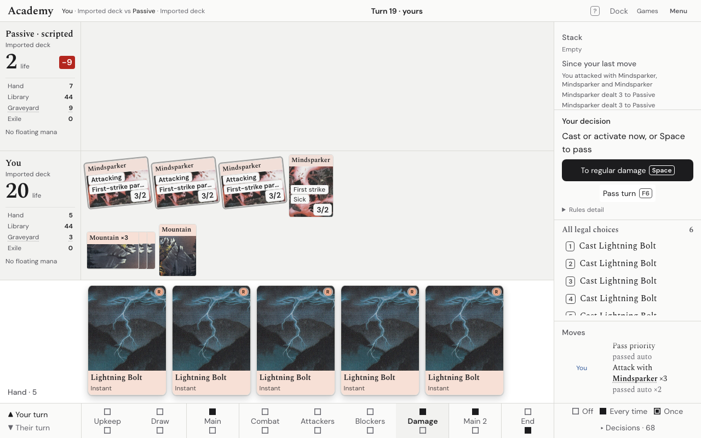
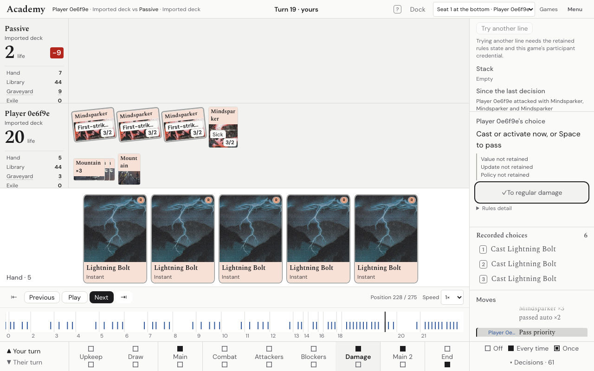

academyRun 2026-11-24 on HEAD 57f1d30497 with a freshly built CPython 3.13 extension. The last cleanup commit had changed bindings.rs after the previous build.
I ran the plan's demo, then decoded every managym/tests/fixtures/observation_json capture (integer steps). I fed integer step 12 and invalid values to Observation.from_json and called each removed name. Native and Python StepEnum agree member by member.
== demo
PRECOMBAT_MAIN PRECOMBAT_MAIN_STEP
True
7 8
learning_catalog False
learning_token_value False
LearningCatalog False
WORLD_VERSION False
== native and python StepEnum agree
ok ['BEGINNING_UNTAP', 'BEGINNING_UPKEEP', 'BEGINNING_DRAW', 'PRECOMBAT_MAIN_STEP', 'COMBAT_BEGIN', 'COMBAT_DECLARE_ATTACKERS', 'COMBAT_DECLARE_BLOCKERS', 'COMBAT_FIRST_STRIKE_DAMAGE', 'COMBAT_DAMAGE', 'COMBAT_END', 'POSTCOMBAT_MAIN_STEP', 'ENDING_END', 'ENDING_CLEANUP']
== 0.2.x captures with integer steps
acting.json (1, 3) -> PRECOMBAT_MAIN PRECOMBAT_MAIN_STEP
empty.json (1, 3) -> PRECOMBAT_MAIN PRECOMBAT_MAIN_STEP
pending-0-0.json (0, 1) -> BEGINNING BEGINNING_UPKEEP
pending-0-1.json (0, 1) -> BEGINNING BEGINNING_UPKEEP
pending-1-0.json (0, 1) -> BEGINNING BEGINNING_UPKEEP
pending-1-1.json (0, 1) -> BEGINNING BEGINNING_UPKEEP
populated.json (1, 3) -> PRECOMBAT_MAIN PRECOMBAT_MAIN_STEP
provenance.json ERR ValueError unknown field `capture_description`, expected one of `decklists_closed`, `shared_effects`, `game_over`, `won`, `turn`, `action_space`, `agent`, `agent_cards`, `agent_sideboard`, `agent_permanents`, `opponent`, `opponent_cards`, `opponent_permanents`, `stack_objects`, `recent_events`, `decision_memory`, `policy_history`
sparse-optionals.json (1, 3) -> PRECOMBAT_MAIN PRECOMBAT_MAIN_STEP
terminal.json (1, 3) -> PRECOMBAT_MAIN PRECOMBAT_MAIN_STEP
viewer-0.json (1, 3) -> PRECOMBAT_MAIN PRECOMBAT_MAIN_STEP
viewer-1.json (1, 3) -> PRECOMBAT_MAIN PRECOMBAT_MAIN_STEP
== first strike from integer 12
COMBAT COMBAT_FIRST_STRIKE_DAMAGE
13 -> ValueError unsupported enum value 13
-1 -> ValueError unsupported enum value -1
'FirstStrikeCombatDamage' -> ValueError unsupported enum value FirstStrikeCombatDamage
1.0 -> ValueError data did not match any variant of untagged enum TurnField
True -> ValueError data did not match any variant of untagged enum TurnField
None -> ValueError data did not match any variant of untagged enum TurnField
named COMBAT_FIRST_STRIKE_DAMAGE
== removed names fail plainly
PlayerConfig(disclosure=) -> TypeError PlayerConfig.__new__() got an unexpected keyword argument 'disclosure'
VectorEnv(opponent_policy=) -> TypeError VectorEnv.__new__() got an unexpected keyword argument 'opponent_policy'
Env(enable_behavior_tracking=) -> TypeError Env.__new__() got an unexpected keyword argument 'enable_behavior_tracking'
Permanent {'card': False, 'name': True, 'power': False, 'toughness': False, 'card_types': False} characteristics True
card_records False
recording.evidence False
recording.FailureEvidence False
recording.read_failure False
recording.CapturedVector False
RecordedGame.deal_seed False
RecordedGame.leg False
RecordedGame.game_trace_sha256 False
RecordedGame.decks False
provenance.json is the capture index, not an observation, so its error is expected. Permanent.name is the effect name override, which stays (out of scope).
Decklist modes after the cleanup inlined the disclosure parser: open, closed and mixed all reset a game. Mixed varies by seed (open, closed, closed, open, …), and "bogus" raises ValueError.
I launched managym academy play with 20 Mountain / 20 Mindsparker / 20 Lightning Bolt against 60 Plains (passive, seed 7) and drove it with Playwright. I set the Damage stop on my turn, played lands, cast Mindsparkers and attacked. The WebSocket frames carried COMBAT_FIRST_STRIKE_DAMAGE (2 frames) alongside COMBAT_DAMAGE. The bar marked Damage as current and the primary action read “To regular damage”. Three first strikers took Passive from 11 to 2 before regular damage. There were no page errors or console errors, and the game ran to its end.

I opened /replay?trace=… in the owning context and stepped with Next. Position 228/275 is the first-strike damage decision. It shows the Damage cell and the same “To regular damage” choice, with no page errors.

I copied a play.sqlite holding 66 games saved on 2026-11-19 by another checkout through a read-only backup. A server ran on that copy, and /api/traces listed them. Replay links are owner-gated to that browser's credential, so I read every game in-process through Academy's own Recording. All 66 opened, and each position returned metadata and a board. Today's 4 first-strike games read the same way, with 8 COMBAT_FIRST_STRIKE_DAMAGE positions.
villain_type: "checkpoint" on the live APIPOST /api/policies/check villain_type=checkpoint → {"compatible":false,"reason":"villain_type must be one of: passive, policy, random, search."}
POST /api/policies/check villain_type=passive → {"compatible":true}
No stored browser state can still send it. The UI stopped sending checkpoint on 2026-11-15, and the saved last-matchup key only appeared on 2026-11-19. Session drafts stored the already-translated policy.
The freshly built wheel has 0 academy/ entries. Packaging files have not changed since pass 3, whose staged sdists and wheels passed validate.py. In a clean install, import academy raised ModuleNotFoundError. I did not repeat that clean-venv install.
I ran the decklist disclosure, observation, native player policy, game record writer, package boundary and pinned pilot tests: 158 passed, 2 skipped.